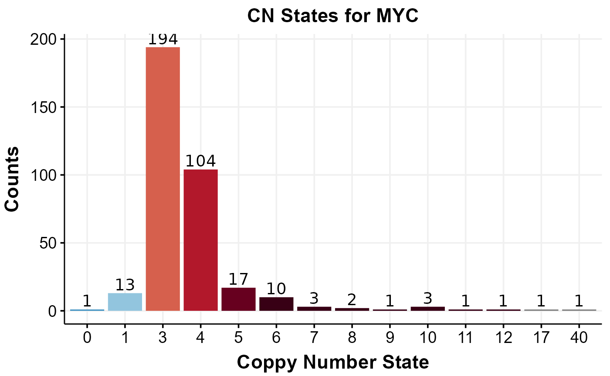
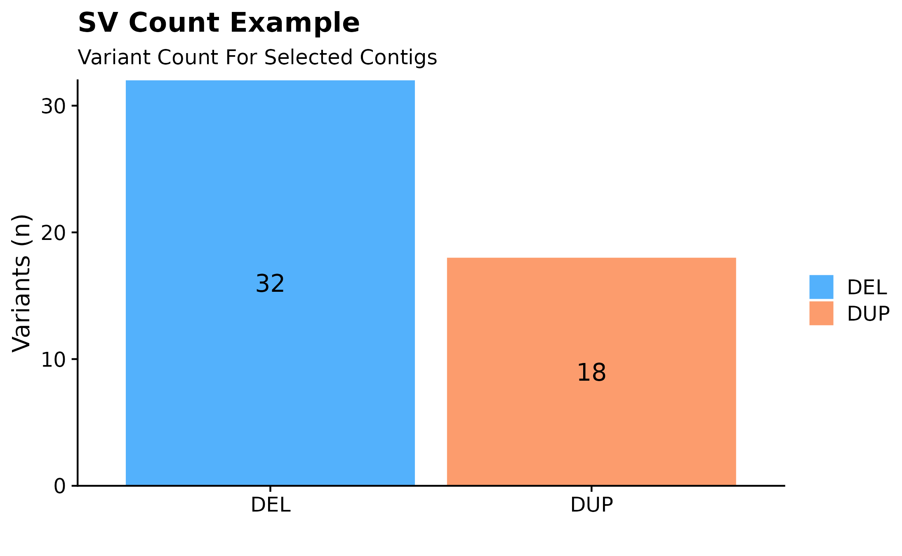
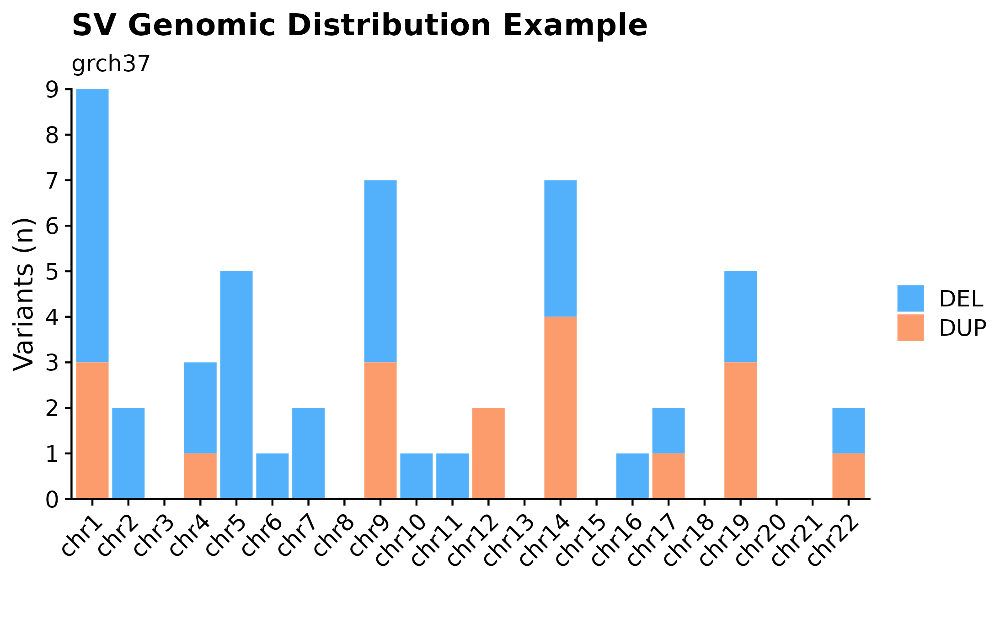
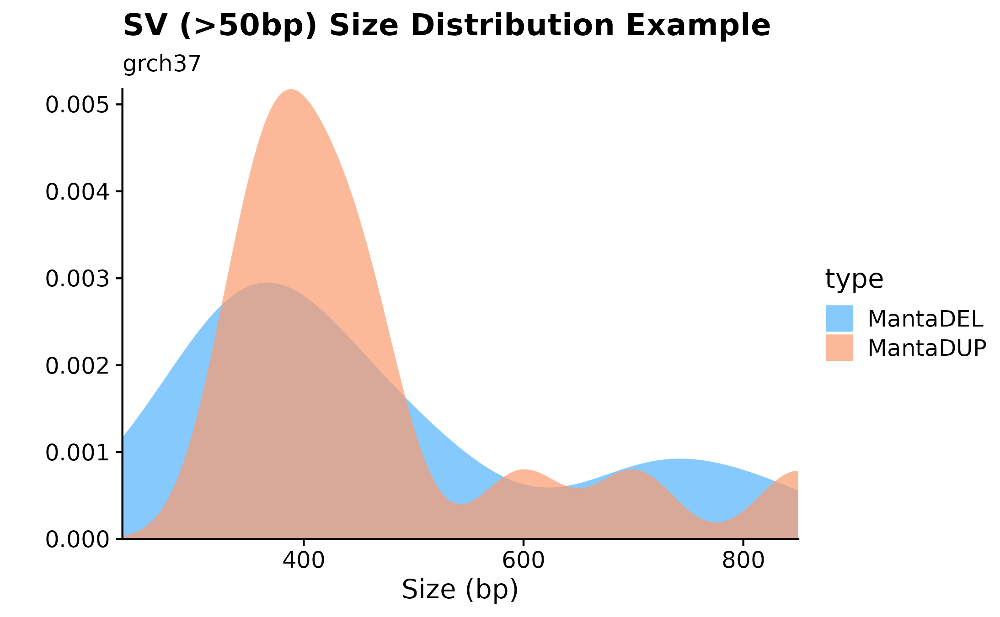
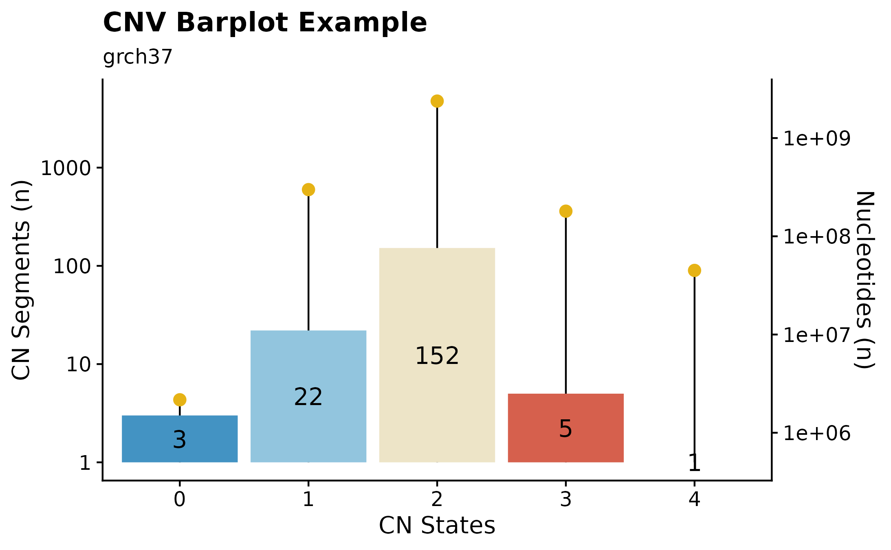
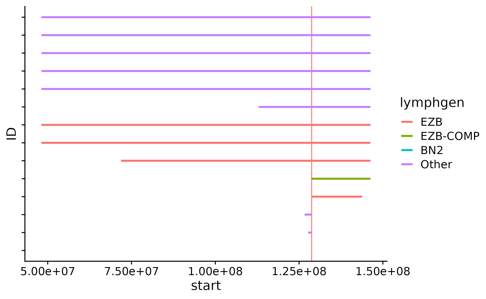
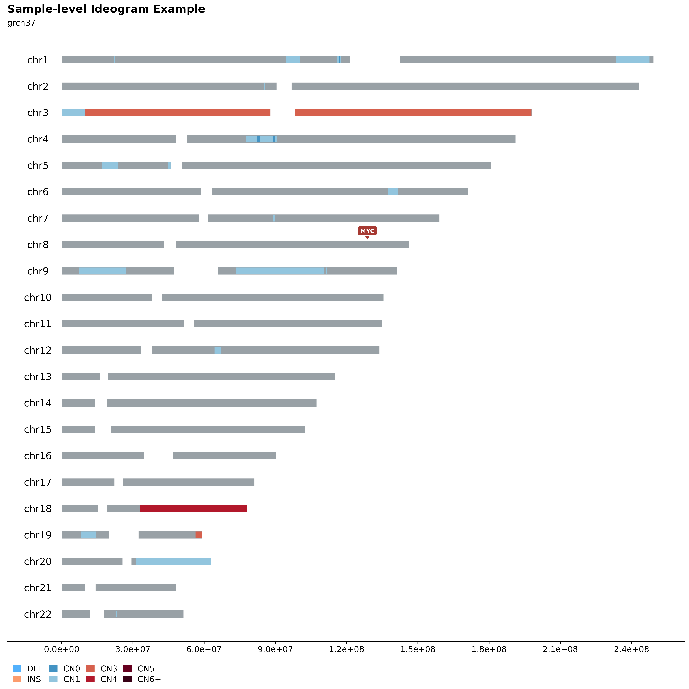
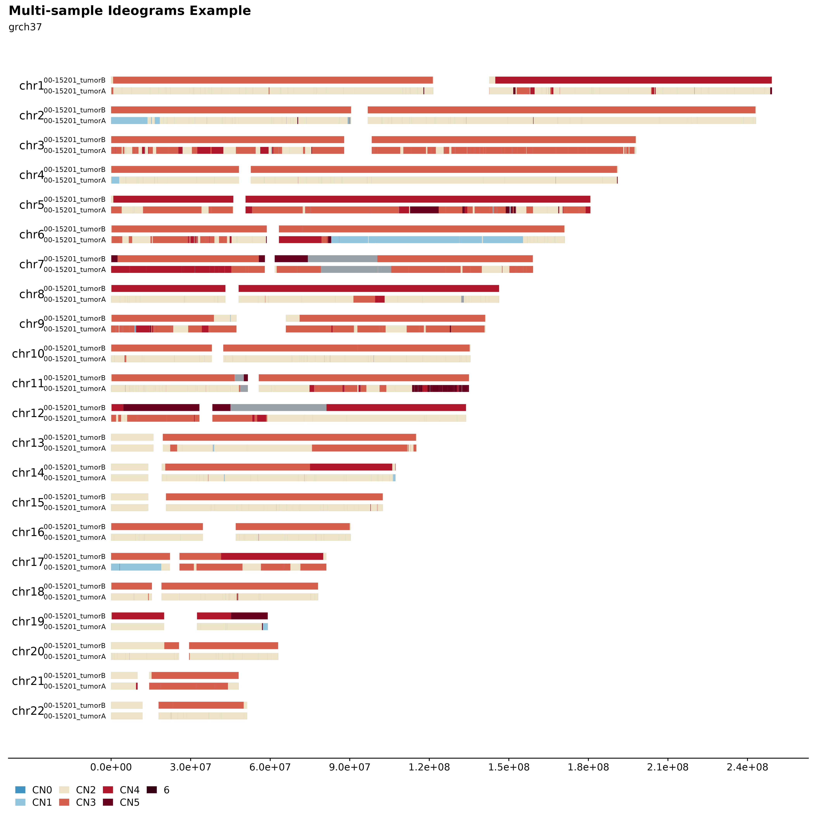

cn_sv_tutorial.RmdThis vignette demonstrates how to return Copy Number (CN) and Structural Variant (SV) data in a variety of different ways. The method of choice might be different for any given application or planned downstream analysis, as well as what information you, as a researcher, have at hand. This vignette also highlights how to visualize CN data, using established GAMBLR functions.
A good way to start is to retrieve metadata for all GAMBL samples. In this tutorial, we are only interested in samples with seq type genome. To get metadata for all such samples, we call get_gambl_metadata. Let us also subset the main metadata based on a few criteria.
#get metadata for all samples
all_metadata = get_gambl_metadata(seq_type_filter = "genome")
#subset metadata to only include DLBCL samples
dlbcl_metadata = dplyr::filter(all_metadata, pathology == "DLBCL")
#subset metadata to only include DLBCL and FL samples
dlbcl_fl_metadata = dplyr::filter(all_metadata, pathology %in% c("DLBCL", "FL"))While we are at it, let us also define a few variables that we will use in the subsequent steps.
#define a sample
this_sample_id = "HTMCP-01-06-00422-01A-01D"
these_sample_list = c("00-15201_tumorA", "00-15201_tumorB")
#return regions for an example gene
myc_region = gene_to_region(gene_symbol = "MYC", genome_build = "grch37", return_as = "region")
#print myc_region
myc_region## [1] "8:128747680-128753674"
#subset first 15 rows from the lymphoma genes bed file
some_lymphoma_genes = c("TNFRSF14","NOL9","KLHL21",
"PIK3CD","MTOR","TNFRSF1B",
"SPEN","ID3","ARID1A",
"ZC3H12A","RRAGC","JAK1",
"BCL10","NRAS","CD58") If we are interested in CN segments in specific genomic regions, the recommended approach is to call get_cn_segments. This function takes a variety of parameters that will allow the user to easily define what regions they are interested in. For example, if this function is being called using the region parameter, the function expects a region defined in the following format; “chr:start-end”. It is also possible to individually specify these coordinates with chr, qstart and qend. Another parameter to be aware of is streamlined, similarly to other GAMBLR function, this parameter controls the number of columns present in the returned data frame. If set to FALSE, full MAF-like format is returned and with this parameter set to TRUE only basic columns are kept. In addition, the parameter remove_chr_prefix is available for dealing with chr prefixes of the returned data frame. In the following example we are demonstrating how to use these different parameters in various combinations.
#using the region parameter
my_segments_grch37 = get_cn_segments(region = "chr8:128,723,128-128,774,067",
projection = "grch37",
this_seq_type = "genome",
streamlined = FALSE,
from_flatfile = TRUE)
#get cn segments for specified region, using chromosome, qstart and qend parameters.
my_segments_hg38 = get_cn_segments(chromosome = "8",
qstart = 128723128,
qend = 128774067,
projection = "hg38",
this_seq_type = "genome",
with_chr_prefix = TRUE,
streamlined = TRUE,
from_flatfile = TRUE)
#get cn segments, using a previously defined region (from gene_to_region) and filtering out all copy number states equal to 2
myc_cns = get_cn_segments(region = myc_region,
projection = "grch37",
this_seq_type = "genome",
streamlined = FALSE,
from_flatfile = TRUE,
with_chr_prefix = FALSE) %>% dplyr::filter(CN != 2)If you are interested in returning the copy number states for a specific region, one can call get_cn_states. This function takes a region (or regions) in the centralized region-format (chr:start-end) as well as region names (e.g gene symbols) to subset the returned cn states on. The function returns a data frame with absolute copy number states for the queried regions. In this example, we are returning copy number states for MYC (previously defined region) across all available samples. We are then filtering out all samples that show the expected copy number state (i.e 2) and are visualizing the counts of each copy number state for the remaining samples.
#get cn states for a specific region
single_gene_cn = get_cn_states(regions_list = myc_region,
region_names = "MYC")
#filter out all copy number states that are equal to 2, i.e keep all samples that have copy number mutations in MYC and count the number of occurrences for each copy number state.
myc_cn_mutated = dplyr::filter(single_gene_cn, MYC != 2) %>%
group_by(MYC) %>%
summarize(count = n()) %>%
dplyr::rename("cn_state" = "MYC") %>%
mutate_at(vars(cn_state), list(factor))
#visualize cn states for this gene with a simple barplot
ggplot(myc_cn_mutated, aes(x = cn_state)) +
geom_bar(aes(y = count, fill = cn_state, label = count), position = "dodge", stat = "identity") +
geom_text(aes(x = cn_state, y = count, label = count), colour = "#000000", size = 5, position = position_dodge(width=0.9), vjust=-0.25) +
scale_fill_manual(values = get_gambl_colours("copy_number")) +
labs(title = "CN States for MYC", x = "Coppy Number State", y = "Counts", fill = "") +
theme_Morons() +
theme(legend.position = "none")
If you are interested in returning all CN segments for one sample (or multiple samples), get_sample_cn_segments is available for this purpose. This functions takes an optional parameter called this_sample_id for query of a singular sample. If CN segments for multiple samples are to be returned, first toggle the Boolean parameter multiple_samples to TRUE and provide a list of sample IDs in the samples_list parameter. Other convenient parameters are with_chr_prefis, if set to TRUE, chromosome prefixes (chr) will be added to the returned data frame. For returning minimal output (rather than full details)m, set streamlined to TRUE. In this example we will first call the described function with default parameters for one sample, the next example we will demonstrate the multiple-samples-return functionality.
#get cn segments for one sample.
one_sample_cn_segs = get_sample_cn_segments(this_sample_id = this_sample_id)
#return chr-prefixed cn segments for multiple samples.
multiple_samples_cn_seqs = get_sample_cn_segments(multiple_samples = TRUE,
sample_list = these_sample_list,
projection = "hg38",
with_chr_prefix = TRUE)For annotating mutations with CN information, we have assign_cn_to_ssm available. This function provides great flexibility for annotating mutations from a variety of sources. For example, the user can either provide an already loaded MAF with mutations to be annotated with the parameter maf_df or a path to a local MAF file with maf_file. If neither of these parameters are used, the function will run get_ssm_by_sample with a sample ID specified in this_sample to return sample-specific SSMs.Similarly, one can also use a local file path for associated CN segments. This is achieved with calling the function with the seg_file parameter. This function also has a variety of convenience parameters for improved flexibility. For example, the return can be subset to specific genes with genes parameter. We can also restrict the return to only show coding mutations (coding_only = TRUE). In addition, include silent mutations can also be toggled with the parameter include_silent (Boolean). The returned data frame shares the same columns as your standard MAF but with two extra columns (CN and log.ratio). In this example we will call this function with a selection of different parameters to thoroughly demonstrate each different scenario (parameter combinations).
#annotate a MAF wigh compy number information.
annotated_ssm = assign_cn_to_ssm(this_sample_id = this_sample_id)
#use same sample for annotating SSM with CN restricted to a specific set of genes.
lymph_genes = lymphoma_genes_comprehensive %>%
pull(Gene)
annotated_ssm_lymphgenes = assign_cn_to_ssm(this_sample_id = this_sample_id,
genes = lymph_genes)
#additional example, using more parameters!
annotated_ssm_extended = assign_cn_to_ssm(this_sample_id = this_sample_id,
coding_only = TRUE,
include_silent = TRUE)IF you want to retrieve combined SV calls (manta and GRIDSS-derived) for one or more samples, you should look into get_combined_sv. This function does exactly this. Similarly to other GAMBLR function, we have a collection of familiar parameters available. The required parameters are sample_ids, a character vector of tumour sample IDs you wish to retrieve SVs for. Another useful way to subset your returned SVs based on VAF score is with the min_vaf parameter, this parameter hgolds the minimum tumour VAF for a SV to be returned. Recommended: 0. (default: 0). The bedpe files used as input to this function were pre-filtered for a minimum VAF of 0.05, and SVs affecting common translocation regions (BCL2, BCL6, MYC, CCND1) were whitelisted (e.g. no VAF filter applied). Therefore if you wish to post-filter the SVs we recommend doing so carefully after loading this data frame. Further, the input bedpe file is annotated with oncogenes and superenhancers from naive and germinal centre B-cells. You can subset to events affecting certain loci using the oncogenes argument.
#example with minimal parameter usage.
combined_svs = get_combined_sv(these_sample_ids = this_sample_id)
#extended example, using additional parameters that are available.
combined_sv_extended = get_combined_sv(these_sample_ids = these_sample_list,
projection = "hg38",
oncogenes = c("MYC", "BCL2", "BCL6"))If you are interested in just retrieving manta SV call this is of course also possible. With get_manta_sv you can retrieve SVs from this specific call-set and filter with available function parameters. To call this function with the minimum parameters, no parameters are required. If the function is called in this way, all SVs are returned with default filtering parameters. If you have a sample ID you are interested in, you simply call this function with the sample_id parameter. Let’s go over the filtering options available for this function. Similarly to get_combined_sv, the following parameters are also available for this function; min_vaf, and from_flatfile. In addition, we also have; min_score describing the lowest Manta somatic score for a SV to be returned. pass, If set to TRUE, include SVs that are annotated with PASS in FILTER column. pair_status To restrict results (if desired) to matched or unmatched results (default is to return all). chromosome The chromosome you are restricting to. qstart Query start coordinate of the range you are restricting to. qend Query end coordinate of the range you are restricting to. region Formatted like chrX:1234-5678 instead of specifying chromosome, start and end separately. In the following example, we will look at a few different examples exploring some of the different parameters.
#get all SVs.
all_svs = get_manta_sv()
#peek dimensions of returned SV calls
dim(all_svs)## [1] 413880 21
#extended example, return all SVs with a minimum vaf score of 0.1, minimum manta somatic score of 40, for MYC region, with chromosome prefixes.
manta_svs = get_manta_sv(min_vaf = 0.1,
min_score = 40,
pass = TRUE,
region = "8:128723128-128774067",
verbose = FALSE)If you want to convert your SV calls into a UCSC-ready custom track, for interrogation on the genome browser, you can call sv_to_customtrack. This parameter only takes four parameters, sv_bedpe, output_file, is_annotated, and sv_name. Were sv_bedpe is a bedpe formatted data frame of SVs. output_file is a bed file with UCSC custom header. is_annotated is a Boolean aprameter, set to TRUE if input SV bedpe is annotated, default is TRUE. sv_name is SV name. Default is set to “all” = include all subtypes of SVs.
#convert SV calls to UCSC custom track file.
#sv_to_custom_track(sv_bedpe = manta_svs, output_file = "../manta_sv_custom_track.bed", is_annotated = FALSE)Interested in how many variants are present in a given sample? A quick way to overview such information would be to call fancy_svbar on a given sample ID. This function returns a bar plot visualizing SVs or SSMs. A variety of sub-setting options are also available. Such as chromosome selection and variant types to be included in plot.
#build plot
fancy_v_count(this_sample_id = this_sample_id,
ssm = FALSE,
plot_title = "SV Count Example",
chr_select = paste0("chr", c(1:22)),
coding_only = FALSE)
Sometimes it can be useful to overview variant distributions across the complete genomic landscape. To do so, one could call fancy_v_chrcount with sample ID. Optional arguments for sub-setting your data are available (see parameter descriptions for more information). In the following example we are plotting SV (ssm = FALSE) counts for autosomes. One can also call add_qc_metric to add a second y-axis annotating mean corrected coverage for the selected sample.
#build plot
fancy_v_chrcount(this_sample_id = "HTMCP-01-06-00422-01A-01D",
plot_subtitle = "grch37",
plot_title = "SV Genomic Distribution Example",
ssm = FALSE,
projection = "grch37",
min_vaf = 0,
chr_select = paste0("chr", c(1:22)),
coding_only = FALSE,
from_flatfile = TRUE,
use_augmented_maf = TRUE)
Another useful plotting function for visualizing SV size distributions is with fancy_sv_sizedens. In this example, we are showing SVs (larger 50bp and with a with minimum vaf of 0) size distributions for a specific sample and selected chromosomes.
#build plot
fancy_sv_sizedens(this_sample_id = this_sample_id,
vaf_cutoff = 0,
size_cutoff = 50,
chr_select = paste0("chr", c(1:22)),
plot_title = "SV (>50bp) Size Distribution Example",
plot_subtitle = "grch37",
projection = "grch37")
Another way to visualize copy number information is with the the fancy_cnvbar. This function takes one required parameter (sample ID), calls get_cn_segments and assign_cn_ssm to retrieve data for plotting. The plot highlights the number of CN states for any given sample (left y-axis), together with n bases included in each given CN state (right y-axis).
#build plot
fancy_cnbar(this_sample_id = this_sample_id,
plot_title = "CNV Barplot Example",
plot_subtitle = "grch37",
chr_select = paste0("chr", c(1:22)),
include_cn2 = TRUE)
Another way to visualize CN segments is with the focal_cn_plot. This function visualizes all CN segments for a defined region, colours the returned segments based on lymphgen information. In addition, this function takes either a specified region (chr:start-end format). If no region is supplied, the user can give the function a gene symbol with gene. If so, the function will internally retrieve the region for the specified gene.Sample IDs are specified along the y-axis and the genomic postilion iis visualized along the x-axis.
#get metadata
this_metadata = get_gambl_metadata()
#get myc region
myc_region = gene_to_region(gene_symbol = "MYC", return_as = "region")
#build plot
focal_cn_plot(these_samples_metadata = this_metadata, region = myc_region, type = "loss", crop_distance = 100000000)
A great way to overview SVs and Copy Number Segments on sample-level is to call fancy_ideogram. This function creates an ideogram based on the chromosomes defined in the chr_select parameter. Copy Number states are plotted along the x-axis (selected contigs plotted vertically on the y-axis). The plot annotates Copy Number States from 0 to 6+. It is also possible to highlight genomic regions fo interest, such as genes, hotspots, difficult to map regions, etc. For convenience, one can specify a list of genes under the gene_annotation parameter. The function will then implement gene_to_region function to convert gene names to bed-style coordinates.
fancy_ideogram(this_sample_id = this_sample_id,
include_ssm = FALSE,
ssm_count = FALSE,
gene_annotation = "MYC",
plot_title = "Sample-level Ideogram Example",
plot_subtitle = "grch37",
coding_only = FALSE,
from_flatfile = TRUE,
use_augmented_maf = TRUE)
It’s also possible to plot multiple samples (2, 3 or 4) in a similar manner. This can be used to infer inheritance patterns, hotspots, etc. across multiple samples or the same sample over different time points. For this purpose fancy_ideogram_multisamp was developed. This function is called with similar parameters as fancy_ideogram with the addition that this_sample has been replaced with these_sample_ids. The function automatically detects the number of samples provided and sets the plotting parameters accordingly.
#load two samples
two_samples = c("00-15201_tumorA", "00-15201_tumorB")
#build plot
fancy_multisamp_ideogram(these_sample_ids = two_samples,
plot_title = "Multi-sample Ideograms Example",
plot_sub = "grch37",
chr_anno_dist = 2.5,
include_cn2 = TRUE,
chr_select = paste0("chr", c(1:22)),
coding_only = FALSE,
from_flatfile = FALSE,
use_augmented_maf = FALSE)